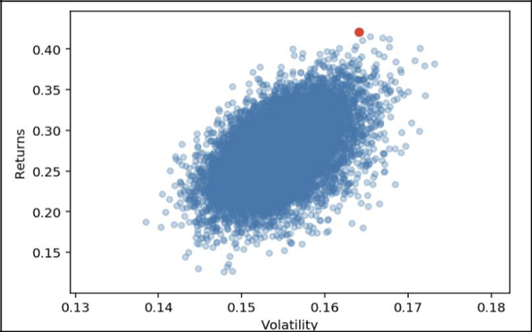

Auto Portfolio Management
a model to automatically manage stock portfolios
Executive Summary
As more and more people make investments in stock markets today, stock portfolio management becomes much more popular than years ago. Some people can afford asset management service to gain profit, while most people manage their portfolios themselves with their limited knowledge and experience. The portfolio strategies vary a lot and sometimes it’s hard to understand the mechanism behind the black box. This project aims to build up a model which help people manage their stock portfolios automatically. In this project, we select 505 stocks of S&P 500 companies as our initial stock pool. Then we crawl some key financial ratios from Yahoo Finance to filter these stocks. After several rounds of filter based on their financial ratio performance, we keep 68 stocks. Then we crawl news of these 68 companies from Yahoo Finance and make sentiment analysis, the result of which is also taken into their final evaluation. Based on the financial ratio performance and sentiment analysis result, we score these stocks with our model and select the top 20 as our final portfolio. Lastly, we use Monte Carlo method to determine the allocation of our investment amount on each stock. To verify the model efficiency, we test our portfolio and make comparison with S&P Index. The result is ideal, so we believe that we provide a good model. This model, however, has no dynamic auto-trade function and only provide a one-time portfolio management. We will update and optimize our model to realize more advanced functions in near future.
Business Goal Analysis
This project aims to build up a model to automatically manage stock portfolios. The model will filter stocks based on the financial ratio performance and sentiment analysis of news for previous 12 months. Also, it will provide the optimal allocation for each stock. This project can help manage stock portfolios to gain more profit and better understand the mechanism behind the black box of some portfolio management tools.
Dataset Description
Initial stock set is chosen from S&P 500 market. S&P 500, which considered to be one of the best representations of the U.S. stock market, measures the stock performance of 500 large companies listed on stock exchanges in the United States. Plus, S&P 500 stock has more exposure degree to public, meaning that we can grab more relative data to do financial analysis, as well as more news to do sentiment analysis. The ratios we heavily considered were: ROE, PEG, and Profit Margin. We will first explain what these ratios indicate, then give a detailed analysis of individual firms we finally select.
ROE (Return on Equity)
It's a basic test of how effectively a company's management uses investors' money. ROE indicates whether management is growing the company's value at an acceptable rate.
PEG (Price/Earnings to Growth ratio)
PEG is a widely employed indicator of a stock's possible true value. Similar as PE ratios, a lower PEG means that the stock is undervalued more. It is favored by many over the Price/Earnings ratio because it also accounts for growth. 1 means stock is traded at a fair value.
Profit Margin
Profit margin is one of the commonly used profitability ratios to gauge profitability of a business activity. A higher the Profit Margin means that the target company has higher profitability. It represents how much percentage of sales has turned into profits.
When we grasp data from Yahoo Finance, we found that all financial indices have the same class in HTML. We can use the description as key to find the ratios. Finally, we get 505 stocks with 6 features.
System Design
We select stocks that meet the standard of financial analysis. In other words, we keep the stock whose indices perform better than overall stock market. Regular stock investment is value investment, which means that we will hold the stock if we are optimistic with company’s future. Since we seek to gain as much profit as possible in short time, we use finance news to do sentiment analysis. Investors are sensitive to news, giving them the chance to speculate.
- Yahoo Finance
- Data/News crawling
- Data Processing
- Sentimental Analysis
- Ratio Scaling
- Stock Selection
- Rating
- Allocation
Selecting Yahoo Finance as our dataset source based on two reasons.
(a) Yahoo Finance contain all the data we need.
(b) Yahoo Finance is system-friendly to web crawlers.
Using ‘beautifulsoup’ as primary tool to grasp financial indices and News.
Dropping all the stocks which have missing value.
After first-round selection, dropping all the stock with extreme value.
Appling NLTK model to all the news and generate additional score system.
Scale finical indices from 0 to 1 to rating the stocks.
(a) In the first round, we filter all the stock that meet the financial rules.
(b) In the second round, we filter all the stock that meet the sentimental analysis standard.
To better evaluate stocks, we create a rating system based on financial rules.
Utilizing Markowitz's mean-variance portfolio theory to obtain a proper weight distribution of the portfolio.
System implementation
Financial Ratio Selection RulesBy conducting the financial ratio analysis and sentiment analysis, we can filter and select stocks which we believe it will have a good performance. The selection rules are processed orderly as follow:
- Drop the missing value (NaN). In this step, 478 stock left where just a small portion of the stock has missing value.
- Select stock whose ROE ratio is greater than 16.7% (Average ROE of S&P 500, csimarket.com). We set the 16.7% as the benchmark of the selection rule to ensure the further performance of the stock has a higher likelihood to exceed the average performance within the market. After this step, 221 stocks left which is a 53.77% decrease from 478 optional stocks.
- Select stock whose PEG(5yrs) ratio is lower than 2.5. Although the PEG(5yrs) ratio we set is higher than 1 which indicate the stock is overvalued, we think this setting value can cover both some stocks are undervalued (PEG lower than one) and those stocks who are reasonably overvalued by market expectation. By conducting this step, 129 stocks left.
- Select stock whose Profit Margin is higher than industrial sector average profit margin. We follow the same logic as the second selection rule to find the stock which has a higher likelihood to performance better than the average performance within the sector. After this step, 68 out of 129 stocks left.
After we finish the first-round selection, 68 out 505 stocks are selected such as Adobe Inc. (ADBE), Biogen Inc. (BIIB), Union Pacific Corporation (UNP), etc. The changes in the stocks number left is shown above. Basically, financial indices influence longer stock price, while financial news influences short term price. Since investment period is limited in one month. We will apply sentiment analysis to stock portfolio after financial analysis in order to achieve as much return as possible.
Sentiment AnalysisAfter the financial ratio selection rules filter, we conduct another most important filter – Sentiment Analysis. News can reflect many vital information of the company and influence the market trend as well. And a lot of general stock players make their transactions mostly based on the news rather than deep research. In this way, news has significant impact on the stock price and traders’ behavior.
In this part, we crawl the news of the 68 left stocks from Yahoo Finance, setting the time period from Dec 2018 to Dec 2019. We collect 1,409 pieces of news in total and use the Natural Language Toolkit (NLTK) to get sentiment scores for sentiment analysis.
The NLTK package generates 4 different scores for each piece of news. They are positive score, neutral score, negative score and compound score. We use compound score as our filter and calculate the average compound score for each stock. Based on the average compound score, we remove any stock with a score lower than 0.8. We remove 16 stocks in this part and there are 52 stocks left.
Modify the ratios & Evaluation
In order to rank these 52 stocks with a new evaluation rule, we modified relative financial ratios and build selection rules. And the modifications are processed orderly as follow:
- To reduce outlier, we calculate Variance Profit Margin by setting the max value cap as 2. After comparing the sector’s average value, we get scaled Variance Profit Margin (SPEG).
- We get scaled ROE (SROE) by setting the max value cap as 60. The main purpose of these two steps adjustments is to reduce the influence from the outliers. Some extreme unordinary activities may not have a positive influence on the market value of the stock in the long run.
- We generate a new factor by calculating scaled PEG. Traditional scaled PEG formula is \( 𝑆𝑃𝐸𝐺 ={ğ‘ƒğ¸ğº - ğ‘ƒğ¸ğº. ğ‘šğ‘–ğ‘› \over ğ‘ƒğ¸ğº. ğ‘šğ‘𑥠− ğ‘ƒğ¸ğº. ğ‘šğ‘–ğ‘› }\). Low PEG indicating that stock value is underestimated, which is opposite to initial PEG formula. To set the correlation between scaled ratio and PEG as same direction, we reverse the formula by calculating the difference between the variance of PEG and value of PEG. We can get the revised Scaled PEG: \[ 𝑆𝑃𝐸𝐺 = {{ğ‘ƒğ¸ğº. ğ‘šğ‘ğ‘¥ - ğ‘ƒğ¸ğº. ğ‘šğ‘–ğ‘›} - ğ‘ƒğ¸ğº\over ğ‘ƒğ¸ğº. ğ‘šğ‘𑥠− ğ‘ƒğ¸ğº. ğ‘šğ‘–ğ‘›} \]
- Three financial indices have its own disadvantage. We need to combine to get an objective effective weight. Compared with the other two indices, margin has relatively more limitation such as it doesn’t take the industry of company into consideration and it may reflect paper profit rather than actual profit, while return on equity can reflect company’s overall profit ability. So that we rank three indices at first, then we take news into consideration. In strong valid market, stock price can totally reflect investors’ participation, news has limited influence. However, current market is semi-strong market. We can do speculate based on information asymmetry. Since the communication technology grow rapidly, news takes up the least weight.
Based on the theory, we generate the following formula:
𝑅𝑎𝑡𝑖𝑛𝑔 = 𝑆𝑃𝐸𝐺 ∗ 0.25 + 𝑆𝑂𝑅𝐸 ∗ 0.35 + 𝑆𝑉𝑃𝑀 ∗ 0.2 + 𝑁𝐸𝑊𝑆 ∗ 0.2.
We set the weight of each factor by trying different allocations manually. The basic goal
is to find the balance among all the value of new evaluation of 52 stocks.
After we applied the new evaluation function, we can rank 48 stocks by the value of evaluation. Then we select the top 20 stocks as our final selection. The table of 20 stocks we pick are as follow:
Allocation
To obtain a proper weight distribution of the portfolio, we utilize Markowitz's mean- variance portfolio theory, which is a technique used by investors to make decisions about financial instruments to invest in, based on the amount of risk that they are willing to accept (risk tolerance).The calculations in our report are based on the adjusted closing price column to calculate stock return, because it standardizes stock splits, dividends, and other corporate behavior, and can truly reflect stock returns over time. We use the price difference of two days to divide the price of the previous day to calculate stock returns. Variance (or its square root standard deviation) is used to measure risk. A higher standard deviation in investment returns means higher risk because the data distribution is farther from the mean and the volatility of returns is greater. The mean reflects the asset's return. The covariance of the portfolio reflects the impact of correlations between different assets on overall risk. We apply Monte Carlo method to randomly generate a set of weights, calculate the returns and standard deviations for this combination. We generate 9 random numbers and normalize them to get a random set of weight data. We Repeat this process for 10,000 times and plot the returns and standard deviations of each combination into a scatter plot. The red curve is shown in the figure, that is, the effective boundary.
According to Markowitz’s mean-variance portfolio theory, rational investors always maximize the expected return at a given level of risk or minimize the expected risk at a given level of return, which reflected in the figure is the effective boundary shown by the red curve. Only the points on the effective boundary are the most effective investment portfolios. In order to find a balance between returns and risks, we us the Sharpe ratio variable, which calculates the excess return for each unit of risk to help us make better decisions. We first calculate the Sharpe ratio corresponding to the combination of Monte Carlo simulations and plotted it as a third variable in a return-risk scatter plot. We find that the combination of the upper edges of the scatter plot has a higher Sharpe ratio. We then find the combination with the largest Sharpe ratio and plotted it in a return-risk scatter plot and highlighted the point with the largest Sharpe ratio in the return-risk scatter plot.
After that, we extract the weight corresponding to the maximum Sharpe Ratio and finally get the weight of the portfolio with the maximum Sharpe Ratio. The results are shown below:
Performance Evaluation
To figure out the performance of our stock portfolio investment strategy, we assume the initial investment amount is $1,000,000. By tracking the historical market data, we can get the short-term performance of the investment strategy from Oct 1st, 2019 to Dec 6th, 2019. Or we can get the long-term performance from the beginning of this year to now. Finally, we suppose our investment strategy will be invested on specific dates (Jan 2nd, 2019, Apr 1st, 2019, Jul 1st, 2019, and Oct 1st, 2019) and all the shares will be sold on Dec 10th, 2019. To simplify the process, we ignore the tax expense, commission payment, etc. We generate a return table which is shown below:
Compare with the S&P 500 index to check whether our investment strategy perform well. The return table is shown below:
Generally, we can say that the performance of our investment strategy is better than the performance of S&P 500 index. And if we invest the capital at the beginning of this year (Jan 2nd, 2019), our stock portfolio investment strategy can get the maximin return (41.88%). To get detailed data of the performance, we generate the return table for 20 stocks in this portfolio. 17 stocks have positive returns and 3 stock have negative returns. See table below:

Conclusion and Future Direction
In general, we build this model based on financial ratios and news sentiment analysis. The evaluation result of this model is ideal with a total return of around 42%, which is higher than that of S&P Index, 25%. Though the actual return will be lower than our evaluation result, it still proves that our model manages the stock portfolio successfully. We can conclude that we develop a successful model to manage stock portfolios and our model realizes the business goal to gain profit.
There are still a lot more to do to optimize the model. Firstly, the model can only help manage the portfolio for one single time but not manage it dynamically. As we want to generate profit via transactions but not holding the stocks in hand. Secondly, the financial ratios we have chosen are still in the basic level, which cannot fully reflect the financial status of the target company. Thirdly, we conduct sentiment analysis on the news of previous 12 month and calculate the average compound score. In real world, people react towards every piece of news but not the overall news of a whole period. The method we use to deal with the news needs further improvement. Last but not the least, not all the 20 stocks in the final portfolio have a positive return, which means our model can still select stocks with bad performance.